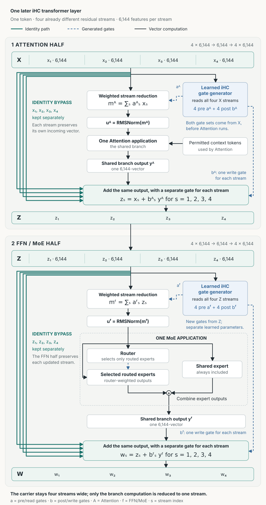
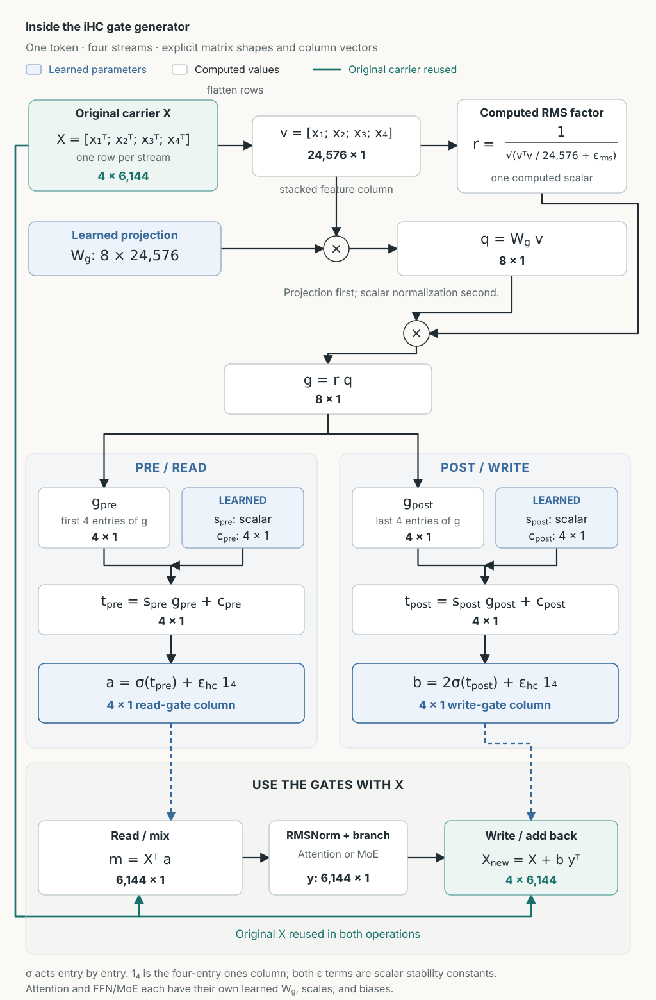

Identity Hyper-Connections
IHC
Keep four streams. Process one mixture. Add the result back four ways.
A visual reference for the HY4 implementation, from one complete later layer to the eight numbers produced by its gate generator.
01 / THE BASIC IDEA
One token carries four evolving feature vectors
In this HY4 configuration, each token carries four streams. Each stream contains 6,144 numbers. Together they form a 4 × 6,144 carrier. These are residual feature streams, not CUDA streams or four independent model runs.
Before Attention or the feed-forward network, iHC computes a weighted sum of the four streams. The processing block receives that one 6,144-number vector after RMSNorm. Its output is then added back to each retained stream, with a separate multiplier for each stream.
The as values are pre gates: they control the mixture. The bs values are post gates: they control how much of the output is added to each stream.
02 / ONE COMPLETE LAYER
Follow a token through a later layer
Think of layer 10. The incoming streams have already been updated by earlier layers and can differ. Attention updates them first. The MoE feed-forward block then reads and updates the resulting carrier.

After Attention
zs = xs + bsAyA
The Attention gates come from X, the carrier entering Attention.
After MoE
ws = zs + bsFyF
The FFN gates come from Z, the carrier after Attention. They use separate learned parameters.
Attention uses information from permitted context tokens. The MoE block transforms this token's mixed input using its selected routed experts and shared expert. Both blocks return one output vector for this token.
03 / IDENTITY AND INTERACTION
Each stream keeps a direct path through
“Identity” describes the residual path. In xs + bsy, the original xs reaches the addition unchanged. There is no learned cross-stream mixing matrix on that direct path. The final stream changes because an update is added.
The streams still influence one another
Stream 1 contributes to the weighted mixture and to the gate calculation. Those affect the processing block and the updates received by the other streams. For example:
The four streams can retain different histories without being isolated from one another. Distinctness is possible, not enforced.
04 / A NUMERICAL EXAMPLE
Two updates, four retained streams
This toy example uses two numbers per stream instead of 6,144. The gates and branch outputs below are chosen to make the arithmetic visible. They are not measurements or model predictions.
First: Attention
Choose pre gates aA = (0.5, 0.25, 0.25, 0.5). The weighted sum is mA = (0.25, 1.25). RMSNorm processes that sum before Attention. Suppose the Attention output is yA = (2, −1), and the post gates are bA = (0.1, 0.2, 0.3, 0.4).
Then: MoE
Choose new pre gates aF = (0.4, 0.3, 0.2, 0.5). Applied to the updated carrier, they produce mF = (0.82, 0.94). RMSNorm processes this sum before MoE. Suppose its output is yF = (−1, 2), with post gates bF = (0.4, 0.1, 0.2, 0.3).
| Stream | Enters layer: X | After Attention: Z | After MoE: W |
|---|---|---|---|
| 1 | (1, 0) | (1.2, −0.1) | (0.8, 0.7) |
| 2 | (0, 2) | (0.4, 1.8) | (0.3, 2.0) |
| 3 | (1, 1) | (1.6, 0.7) | (1.4, 1.1) |
| 4 | (−1, 1) | (−0.2, 0.6) | (−0.5, 1.2) |
For stream 1, the two additions are:
(1.2, −0.1) + 0.4(−1, 2) = (0.8, 0.7)
The pre gates deliberately do not sum to one. They are independent gates, not a probability distribution.
05 / INSIDE THE GATE GENERATOR
Four vectors in. Eight scalar controls out.
The gate generator is a small learned projection followed by rescaling and sigmoid functions. It reads the current values in all four streams. Each of its eight outputs can therefore depend on every coordinate of every stream.
24,576 values→Learned projection
8 scores→Rescale + sigmoid
4 pre + 4 post gates
Below, v refers to one token. The same calculation is performed independently for each token's carrier.
1. Lay the four streams end to end
The implementation converts these values to FP32 for gate calculation. Concatenation preserves the values; it just presents them as one long vector.
2. Measure the carrier's overall magnitude
This is one inverse root-mean-square value for the token's full carrier. It does not subtract a mean or apply a learned normalization gain.
3. Compute eight learned weighted sums
Each row of Wg contains a different learned weight for each input coordinate. A row combines all 24,576 values into one score. Eight rows produce eight scores.
The linear projection has no bias. The eager implementation computes the projection first and multiplies its scores by r. For this bias-free projection, normalizing the input first is mathematically equivalent.
4. Turn the scores into pre and post gates
The first four scores produce pre gates. The other four produce post gates. For i = 1, 2, 3, 4:
Here σ(q) = 1 / (1 + e−q). The two s values are learned scales, one per gate group. The eight c values are learned offsets, one per output. The tiny epsilon is added after the sigmoid, and after the factor of two for post gates.
For a simple illustration, a pre-gate input of zero gives about 0.5; a post-gate input of zero gives about 1.0. Each resulting gate is a single number applied across all 6,144 coordinates of its stream.
5. Use the gates at two different points
The pre gates immediately form the weighted mixture. A separate sublayer RMSNorm then processes that mixture before Attention or MoE. The post gates are retained until the branch returns its output, and then scale the four residual updates.
| Learned during training | Computed from the current token |
|---|---|
| Projection matrix Wg Two scales spre, spost Eight offsets c1…8 | Inverse RMS r Eight scores g Four pre gates and four post gates |
Attention and FFN have separate parameter sets. Different decoder layers also have separate sets. Both gate groups depend on the carrier before their own branch runs; the post gates are not calculated from its output.
06 / MATRIX VIEW
The gate generator, with every shape visible
Follow one token. Use column vectors throughout this section. Each stream has 6,144 coordinates; the four streams together have 24,576 coordinates. The formulas below use the exact gate calculation described above.

1. Stack the four stream vectors
Each stream is a column vector. The carrier places the four transposed vectors in rows; flattening reads those rows in order.
2. Multiply by a learned matrix with eight rows
Each row of the weight matrix produces one score. Every row has a weight for every input coordinate. The projection is bias-free; the learned offsets appear later.
For example, the first score is the sum of 24,576 weighted input values:
3. Rescale all eight scores by one inverse RMS
The inverse RMS is computed from the full input vector. The same scalar multiplies all eight raw scores.
4. Split the scores and compute two gate vectors
The first four entries feed the pre gates. The last four feed the post gates.
Sigmoid acts on each entry. The two scales are learned scalars, and each offset vector contains four learned values. Here εhc = 10−6, and 14 is a four-by-one vector of ones. The weights, scales, and offsets are learned parameters; the gate values are computed from the current token.
5. Read one mixture; write four updates
The pre gates form a weighted sum through a matrix–vector product:
RMSNorm and the processing block turn that mixture into one output vector. For Attention, the processing block also uses permitted context tokens.
The post gates create an outer product. Each row is a differently scaled copy of the same branch output:
This is the same per-stream rule as before: add bsy to the stream that was already there. The original carrier is preserved on the identity path; the outer product supplies its update.
07 / BEGINNING AND END
Where the four streams come from, and where they go
- At the model entrance: one token embedding is copied into four initially identical streams.
- Inside the first layer: different post gates can already make the streams differ. They are not required to remain identical throughout this layer.
- Through later layers: the updated carrier is passed forward. The model does not make four fresh identical copies at every layer.
- At the model exit: a separate learned gate generator produces four head gates. A weighted sum collapses the four streams into one vector, followed by final normalization and the language-model head.
The final reduction is a learned weighted sum, not necessarily an average, and not concatenation into the language-model head.
08 / KEEP THESE SEPARATE
Three different kinds of gate
| Component | What it controls |
|---|---|
| iHC pre and post gates | How four residual streams form the branch input, and how the branch output updates those streams. |
| MoE router | Which routed experts process a token, and their combination weights. The shared expert is always included and is not selected by the router. |
| HY4 Attention output gate | Individual coordinates of the expanded attention output, before its output projection. It is separate from iHC. |
Four residual streams do not imply four Attention applications, four independent model runs, or four times the MLA KV cache. MoE still evaluates its selected experts within one MoE application.
09 / SOURCES AND SCOPE
A guide to the checked HY4 implementation
The formulas were checked against the HY4 model implementation used in the prefill iHC work and its checkpoint configuration. The configuration has four streams, a hidden width of 6,144, post-gate magnitude 2, gate epsilon 10−6, and RMS epsilon 10−5. Gate projection weights, scales, and offsets are FP32 in the checked source.
- HY4 execution tree: the four-stream carrier
- Prefill iHC implementation review — internal GitLab access required.
This page explains the mechanism. It does not establish a measured quality improvement or a runtime speedup over ordinary residual connections. Fused kernels may combine operations while preserving this mathematical flow.